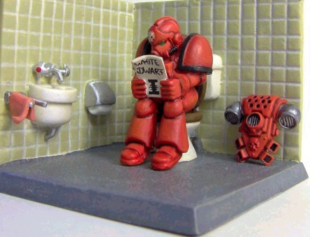

Emperor protects!
We are the Emperor chosen!

We may be few, and our enemies many. Yet so long as there remains one of us still fighting, one who still rages in the name of justice and truth, then by the Allfather, the galaxy shall yet know hope.